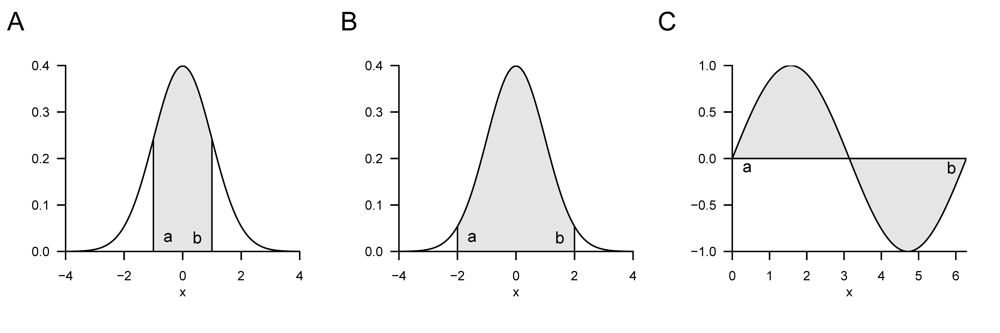
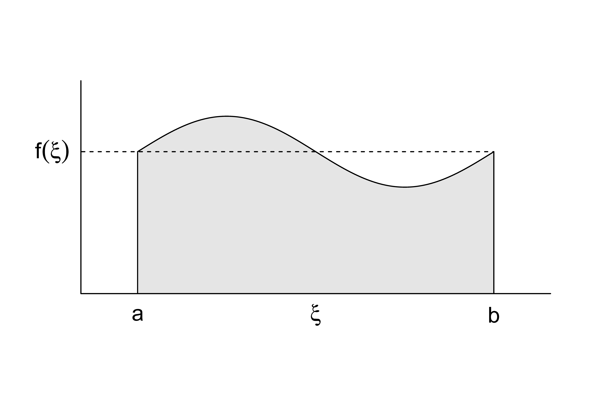

| Name | Definition | Stammfunktion |
|---|---|---|
| Polynomfunktion | \(f(x) := \sum_{i=0}^n a_ix^i\) | \(F(x) = \sum_{i=0}^n \frac{a_i}{i+1}x^{i+1}\) |
| Konstante Funktion | \(f(x) := a\) | \(F(x) = ax\) |
| Identitätsfunktion | \(f(x) := x\) | \(F(x) = \frac{1}{2}x^2\) |
| Linear-affine Funktion | \(f(x) := ax + b\) | \(F(x) = \frac{1}{2}ax^2 + bx\) |
| Quadratfunktion | \(f(x) := x^2\) | \(F(x) = \frac{1}{3}x^3\) |
| Exponentialfunktion | \(f(x) := \exp(x)\) | \(F(x) = \exp(x)\) |
| Logarithmusfunktion | \(f(x) := \ln(x)\) | \(F(x) = x \ln x - x\) |
7 Integralrechnung
Dieses Kapitel gibt einen Überblick über zentrale Begriffe der Integralrechnung. Das Hauptaugenmerk liegt dabei durchgängig auf der Klärung von Begrifflichkeiten, ihrer mathematischen Symbolik und der durch sie vermittelten Intuition und weniger auf der konkreten Berechnung von Integralen.
7.1 Unbestimmte Integrale
Wir beginnen mit der Definition des unbestimmen Integrals und dem Begriff der Stammfunktion.
Definition 7.1 (Unbestimmtes Integral und Stammfunktion) Für ein Intervall \(I \subseteq \mathbb{R}\) sei \(f : I \to \mathbb{R}\) eine univariate reellwertige Funktion. Dann heißt eine differenzierbare Funktion \(F : I \to \mathbb{R}\) mit der Eigenschaft \[\begin{equation} F' = f \end{equation}\] Stammfunktion von \(f\). Ist \(F\) eine Stammfunktion von \(f\), dann heißt \[\begin{equation} \int f(x) \,dx := F + c \mbox{ mit } c \in \mathbb{R} \end{equation}\] unbestimmtes Integral der Funktion \(f\). Das unbestimmte Integral einer Funktion bezeichnet damit die Menge aller Stammfunktionen einer Funktion.
Obige Definition besagt, dass die Ableitung der Stammfunktion einer Funktion \(f\) eben \(f\) ist. Das unbestimmte Integral einer Funktion \(f\) ist darüber hinaus die Menge aller durch Addition verschiedener Konstanten \(c \in \mathbb{R}\) gegebenen Stammfunktionen von \(f\). Eine solche Konstante \(c \in \mathbb{R}\) heißt auch Integrationskonstante; es gilt natürlich \(\frac{d}{dx}c = 0\). Das Symbol \(\int f(x) \,dx\) ist als \(F + c\) definiert. \(f(x)\) wird in diesem Ausdruck Integrand genannt.
\(\int\) und \(\,dx\) haben keine eigentliche Bedeutung, sondern sind reine Symbole.
Für die in vorherigen Abschnitten eingeführten elementaren Funktionen ergeben sich die in Tabelle aufgelisteten Stammfunktionen. Man überzeugt sich davon durch Ableiten der jeweiligen Stammfunktion mithilfe der Rechenregeln der Differentialrechnung. Die uneigentlichen Integrale dieser elementaren Funktionen ergeben sich dann direkt aus diesen Stammfunktionen durch Addition einer Integrationskonstanten.
Die in nachfolgendem Theorem zusammengestellten Rechenregeln sind oft hilfreich, um Stammfunktionen von Funktionen zu bestimmen, die sich aus Funktionen mit bekannten Stammfunktionen zusammensetzen.
Theorem 7.1 (Rechenregeln für Stammfunktionen) \(f\) und \(g\) seien univariate reellwertige Funktion, die Stammfunktionen besitzen, und \(g\) sei invertierbar. Dann gelten folgende Rechenregeln für die Bestimmung von Stammfunktionen
Summenregel \[\begin{equation} \int a f(x) + bg(x)\,dx = a\int f(x)\,dx + b\int g(x)\,dx \mbox{ für } a,b \in \mathbb{R} \end{equation}\]
Partielle Integration \[\begin{equation} \int f'(x)g(x)\,dx = f(x)g(x) - \int f(x)g'(x)\,dx \end{equation}\]
Substitionsregel \[\begin{equation} \int f(g(x))g'(x)\,dx = \int f(t)\,dt \mbox{ mit } t = g(x) \end{equation}\]
Beweis. Für einen Beweis der Summenregel verweisen wir auf die weiterführende Literatur. Die Rechenregel der partiellen Integration ergibt sich durch Integration der Produktregel der Differentiation. Wir erinnern uns, dass gilt \[\begin{equation} (f(x)g(x))' = f'(x)g(x) + f(x)g'(x). \end{equation}\] Integration beider Seiten der Gleichung und Berücksichtigung der Summenregel für Stammfunktionen ergibt dann \[\begin{align} \begin{split} \smallint (f(x)g(x))' \,dx & = \smallint f'(x)g(x) + f(x)g'(x) \,dx \\ \Leftrightarrow f(x)g(x) & = \smallint f'(x)g(x)\,dx + \smallint f(x)g'(x) \,dx \\ \Leftrightarrow \smallint f'(x)g(x)\,dx & = f(x)g(x) - \smallint f(x)g'(x) \,dx. \end{split} \end{align}\] Die Substitutionsregel ergibt sich für \(F' = f\) durch Anwendung der Kettenregel der Differentiation auf die verkettete Funktion \(F(g)\). Speziell gilt zunächst \[\begin{align} \begin{split} (F(g(x)))' = F'(g(x))g'(x) = f(g(x))g'(x). \end{split} \end{align}\] Integration beider Seiten der Gleichung \[\begin{equation} (F(g(x))) ' = f(g(x))g'(x) \end{equation}\] ergibt dann \[\begin{align} \begin{split} \smallint (F(g(x)))' \,dx & = \smallint f(g(x))g'(x) \,dx \\ \Leftrightarrow F(g(x)) + c & = \smallint f(g(x))g'(x) \,dx \\ \Leftrightarrow \smallint f(g(x))g'(x) \,dx & = \smallint f(t)\,dt \mbox{ mit } t := g(x). \end{split} \end{align}\] Dabei ist die rechte Seite der letzten obigen Gleichung zu verstehen als \(F(g(x)) + c\), also als Stammfunktion von \(f\) evaluiert an der Stelle \(t := g(x)\). Das \(dt\) ist nicht durch \(dg(x)\) zu ersetzen, sondern rein notationeller Natur.
Unbestimmte Integrale nehmen in der Lösung von Differentialgleichungen einen zentralen Platz ein. Naheliegender ist aber zunächst die Anwendung unbestimmter Integrale im Kontext der Auswertung bestimmter Integrale, wie im nächsten Abschnitt eingeführt.
7.2 Bestimmte Integrale
Anschaulich entspricht ein bestimmtes Integral der vorzeichenbehafteten und auf ein Intervall \([a,b]\) beschränkten Fläche zwischen dem Graphen einer Funktion \(f\) und der \(x\)-Achse (vgl. Abbildung 7.1). Vorzeichenbehaftet heißt dabei, dass Flächen zwischen der \(x\)-Achse und positiven Werten von \(f\) positiv zur Fläche beitragen, Flächen zwischen der \(x\) und negativen Werten von \(f\) dagegen negativ. So ergeben sich zum Beispiel der Wert des in Abbildung 7.1 A gezeigten bestimmten Integral zu 0.68, der Wert des in Abbildung Abbildung 7.1 B gezeigten bestimmten Integrals zu 0.95 (die eingezeichnete Fläche ist offensichtlich größer als in Abbildung 7.1 A) und der Wert des in Abbildung 7.1 C gezeigten bestimmten Integrals zu 0 (die eingezeichneten positiven und negativen Flächen gleichen sich genau aus). Letzteres Beispiel legt auch die Interpretation des Integrals als Durchschnittswert einer Funktion \(f\) über einem Intervall \([a,b]\) nahe.

Um den Begriff des bestimmten Integrals im Sinne des Riemannschen Integrals einführen zu können, müssen wir zunächst etwas Vorarbeit leisten. Wir beginnen damit, einen Begriff für die Aufteilung eines Intervalls in kleinere Abschnitte einzuführen.
Definition 7.2 (Zerlegung eines Intervalls und Feinheit) Es sei \([a,b] \subset \mathbb{R}\) ein Intervall und \(x_0,x_1,x_2,...,x_n \in [a,b]\) eine Menge von Punkten mit \[\begin{equation} a =: x_0 < x_1 < x_2 \cdots < x_n := b \end{equation}\] und \[\begin{equation} \Delta x_i := x_i - x_{i-1} \mbox{ für } i = 1,...,n. \end{equation}\] Dann heißt die Menge \[\begin{equation} Z := \{[x_0,x_1], [x_1,x_2], ..., [x_{n-1},x_n]\} \end{equation}\] der durch \(x_0,x_1,x_2,...,x_n\) definierten Teilintervalle von \([a,b]\) eine Zerlegung von \([a,b]\). Weiterhin heißt \[\begin{equation} Z_{\mbox{max}} := \max_{i \in n} \Delta x_i, \end{equation}\] also die größte der Teilintervalllängen \(\Delta x_i\), die Feinheit von \(Z\).
Anschaulich ist \(\Delta x_i\) die Breite der Rechtecke in Abbildung 7.2, wie wir in der Folge sehen werden. Mithilfe der Begriffe der Zerlegung eines Intervalls können wir nun den Begriff der Riemannschen Summen einführen.
Definition 7.3 (Riemannsche Summen) \(f : [a,b] \to \mathbb{R}\) sei eine beschränkte Funktion auf \([a,b]\), d.h. \(|f(x)| < c\) für \(0 < c < \infty\) und alle \(x \in [a,b]\), \(Z\) sei eine Zerlegung von \([a,b]\) mit Teilintervalllängen \(\Delta x_i\) für \(i = 1,...,n\). Weiterhin sei \(\xi_{i}\) für \(i = 1,...,n\) ein beliebiger Punkt im Teilintervall \([x_{i-1}, x_{i}]\) der Zerlegung \(Z\). Dann heißt \[\begin{equation} R(Z) := \sum_{i=1}^n f(\xi_i)\Delta x_i \end{equation}\] Riemannsche Summe von \(f\) auf \([a,b]\) bezüglich der Zerlegung \(Z\).
Wählt man zum Beispiel in der Riemannschen Summe in jedem Teilintervall das Maximum von \(f\), so ergibt sich die sogenannte Riemannsche Obersumme, \[\begin{equation} R_o(Z) := \sum_{i=1}^n \left(\max_{[x_{i-1}, x_{i}]} f(\xi_i) \right)\Delta x_i. \end{equation}\] Wählt man dagegen in jedem Teilintervall dagegen das Minimum von \(f\), so ergibt sich dies sogenannte Riemannsche Untersumme. \[\begin{equation} R_u(Z) := \sum_{i=1}^n \left(\min_{[x_{i-1}, x_{i}]} f(\xi_i) \right)\Delta x_i. \end{equation}\] Abbildung 7.2 verdeutlicht die Definition dieser Riemannschen Summen: die dunkelgrauen Rechtecke haben jeweils die Fläche \([x_{i-1}, x_{i}] \cdot \min_{[x_{i-1}, x_{i}]} f(\xi)\) und bilden damit die Summenterme in der Riemannschen Untersumme \[\begin{equation} R_u(Z) := \sum_{i=1}^4 \left(\min_{[x_{i-1}, x_{i}]} f(\xi_i) \right) \cdot \Delta x_i. \end{equation}\] Die vertikale Kombination aus dunkelgrauen und hellgrauen Rechtecken hat jeweils die Fläche \([x_{i-1}, x_{i}] \cdot \max_{[x_{i-1}, x_{i}]} f(\xi)\) und bilden damit die Summenterme in der Riemannschen Obersumme \[\begin{equation} R_o(Z) := \sum_{i=1}^4 \left(\max_{[x_{i-1}, x_{i}]} f(\xi_i) \right) \cdot \Delta x_i. \end{equation}\] Stellt man sich nun vor, dass man \(\Delta x_i\) für alle \(i = 1,...,n\) gegen Null gehen lässt, verkleinert man die Feinheit der Zerlegung \(Z\) also immer weiter, so werden sich die Werte von \(\min_{[x_{i-1}, x_{i}]} f(\xi_i)\) und \(\max_{[x_{i-1}, x_{i}]} f(\xi_i)\) und damit auch die Werte von \(R_u(Z)\) und \(R_o(Z)\) immer weiter annähern. Diesen Grenzprozess macht man sich in der Definition des Riemannschen Integrals zunutze.

Definition 7.4 (Bestimmtes Riemannsches Integral) \(f : [a,b] \to \mathbb{R}\) sei eine beschränkte reellwertige Funktion auf \([a,b]\). Weiterhin sei für \(Z_k\) mit \(k = 1,2,3...\) eine Folge von Zerlegungen von \([a,b]\) mit zugehörigen Feinheit \(Z_{\mbox{max},k}\). Wenn für jede Folge von Zerlegungen \(Z_1, Z_2,...\) mit \(|Z_{\mbox{max},k}| \to 0\) für \(k \to \infty\) und für beliebig gewählte Punkte \(\xi_{ki}\) mit \(i = 1,...,n\) im Teilintervall \([x_{k,i-1}, x_{k,i}]\) der Zerlegung \(Z_k\) gilt, dass die Folge der zugehörigen Riemannschen Summen \(R(Z_1), R(Z_2), ...\) gegen den gleichen Grenzwert strebt, dann heißt \(f\) auf \([a,b]\) integrierbar. Der entsprechende Grenzwert der Folge von Riemannschen Summen wird bestimmtes Riemannsches Integral genannt und mit \[\begin{equation} \int_a^b f(x)\,dx := \lim_{k \to \infty} R(Z_k) \mbox{ für } |Z_{\mbox{max},k}| \to 0 \end{equation}\] bezeichnet. Die Werte \(a\) und \(b\) bezeichnet man in diesem Kontext als untere und obere Integrationsgrenzen, respektive, \(f(x)\) als Integrand und \(x\) als Integrationsvariable.
Die Riemannsche Integrierbarkeit einer Funktion und der Wert eines bestimmten Riemannschen Integrals sind also im Sinne einer Grenzwertbildung definiert. Die Theorie der Riemannschen Integrale lässt sich allerding um die Hauptsätze der Differential- und Integralrechnung erweitern, so dass zur konkreten Berechnung eines bestimmten Integrals die Bildung von Zerlegungen und die Bestimmung eines Grenzwertes nur selten nötig ist. Der Einfachheit halber verzichten wir in der Folge auf die Bezeichungen Riemannsche und sprechen einfach von bestimmten Integralen.
Ein erster Schritt zur Vereinfachung der Berechnung von bestimmten Integralen ist das Feststellen folgender Rechenregeln, für deren Beweis wir auf die weiterführende Literatur verweisen.
Theorem 7.2 (Rechenregeln für bestimmte Integrale) Es seien \(f\) und \(g\) integrierbare Funktionen auf \([a,b]\). Dann gelten folgende Rechenregeln.
Linearität. Für \(c_1,c_2\in \mathbb{R}\) gilt \[\begin{equation} \int_a^b (c_1 f(x) + c_2g(x))\,dx = c_1 \int_a^b f(x)\,dx + c_2 \int_a^b f(x)\,dx. \end{equation}\]
Additivität. Für \(a < c < b\) gilt \[\begin{equation} \int_a^b f(x)\,dx = \int_a^c f(x)\,dx + \int_c^b f(x)\,dx. \end{equation}\]
Vorzeichenwechsel bei Umkehrung der Integralgrenzen \[\begin{equation} \int_a^b f(x)\,dx = - \int_b^a f(x)\,dx. \end{equation}\]
Unabhängigkeit von der Wahl der Integrationsvariable \[\begin{equation} \int_a^b f(x)\,dx = \int_a^b f(y)\,dy. \end{equation}\]
Unabhängigkeit des Integrals von Art des Intervalls. Es gilt \[\begin{equation} \int_{a}^{b} f(x)\,dx = \int_{]a,b[}f(x)\,dx = \int_{[a,b[}f(x)\,dx = \int_{]a,b]}f(x)\,dx = \int_{[a,b]}f(x)\,dx. \end{equation}\] wobei \(\int_I\) das bestimmte Integral von \(f\) auf dem Intervall \(I \subseteq \mathbb{R}\) bezeichnet.
Eine graphische Darstellung der Rechenregel der Additivität findet sich in Abbildung 7.3. Die Summe der durch die bestimmten Integrale gegebenen Flächen \(\int_a^c f(x)\,dx\) und \(\int_c^b f(x)\,dx\) mit \(a < c < b\) ergibt sich dabei zur Fläche von \(\int_a^b f(x)\,dx\).

Die in der Nachfolge vermerkten Hauptsätze der Differential- und Integralrechnung schließlich, ermöglichen es, bestimmte Integrale einer Funktion \(f\) direkt mithilfe der Stammfunktion \(F\) von \(f\) zu berechnen.
Theorem 7.3 (Erster Hauptsatz der Differential- und Integralrechnung) Ist \(f : I \to \mathbb{R}\) eine auf dem Intervall \(I \subset \mathbb{R}\) stetige Funktion, dann ist die Funktion \[\begin{equation} F : I \to \mathbb{R}, x \mapsto F(x) := \int_a^x f(t)\,dt \mbox{ mit } x, a \in I \end{equation}\] eine Stammfunktion von \(f\).
Beweis. Wir betrachten den Differenzquotienten \[\begin{equation} \frac{1}{h}(F(x+h) - F(x)) \end{equation}\] Mit der Definition \(F(x) := \smallint_a^x f(t)\,dt\) und der Additivität des bestimmten Integrals gilt dann \[\begin{equation} \frac{1}{h}(F(x+h) - F(x)) = \frac{1}{h}\left(\int_a^{x + h} f(t)\,dt - \int_a^{x} f(t)\,dt\right) = \frac{1}{h} \int_x^{x + h}f(t)\,dt \end{equation}\] Mit dem Mittelwertsatz der Integralrechnung gibt es also ein \(\xi \in ]x,x+h[\), so dass \[\begin{equation} \frac{1}{h}(F(x+h) - F(x)) = f(\xi) \end{equation}\] Grenzwertbildung ergibt dann \[\begin{equation} \lim_{h \to 0}\frac{1}{h}(F(x+h) - F(x)) = \lim_{h \to 0} f(\xi) \mbox{ für } \xi \in ]x, x + h[ \Leftrightarrow F'(x) = f(x). \end{equation}\]
Für den Beweis des Ersten Hauptsatzes der Differential- und Integralrechnung benötigen wir offenbar den Mittelwertsatz der Integralrechnung, welchen wir hier ohne Beweis wiedergeben und in Abbildung 7.4 veranschaulichen.
Theorem 7.4 (Mittelwertsatz der Integralrechnung) Für eine stetige Funktion \(f : [a,b] \to \mathbb{R}\) existiert ein \(\xi \in ]a,b[\) mit \[\begin{equation} \int_a^b f(x)\,dx = f(\xi)(b-a) \end{equation}\]
Der Mittelwertsatz der Integralrechnung garantiert die Existenz eines \(\xi \in [a,b]\), so dass das bestimmte Integral \(\int_a^b f(x)\,dx\) gleich dem Produkt aus der “Rechteckhöhe” \(f(\xi)\) und und der “Rechteckbreite” \((b-a)\) ist. In Abbildung 7.4 liegt dieses \(\xi\) genau mittig zwischen \(a\) und \(b\). Dass die sich so ergebene grau eingefärbte Rechteckfläche gleich \(\int_a^b f(x)\,dx\) ist, ergibt sich aus der visuell zumindest nachvollziebaren Tatsache, dass die Flächen zwischen \(f(x)\) und \(f(\xi)\) im Intervall \([a,\xi]\) und zwischen \(f(\xi)\) und \(f(x)\) im Intervall \([\xi,b]\) den gleichen Betrag haben, erstere aber mit einem negativen Vorzeichen behaftet ist. Der Mittelwertsatz der Integralrechnung garantiert im Allgemeinen aber nur die Existenz eines \(\xi \in [a,b]\) mit der diskutierten Eigenschaft, gibt aber keine Formel zu Bestimmung von \(\xi\) an.

Der Zweite Hauptsatz der Differential- und Integralrechnung schließlich besagt, wie man mithilfe der Stammfunktion ein bestimmtes Integral berechnet.
Theorem 7.5 (Zweiter Hauptsatz der Differential- und Integralrechnung) Ist \(F\) eine Stammfunktion einer stetigen Funktion \(f : I \to \mathbb{R}\) auf einem Intervall \(I\), so gilt für \(a,b \in I\) mit \(a \le b\) \[\begin{equation} \int_a^b f(x)\,dx = F(b) - F(a) =: F(x)\vert_a^b \end{equation}\]
Beweis. Mit den Rechenregeln für bestimmte Integrale und dem ersten Hauptsatz der Differential- und Integralrechnung ergibt sich \[\begin{equation} F(b) - F(a) = \int_\alpha^b f(t)\,dt - \int_\alpha^a f(t)\,dt = \int_a^b f(x)\,dx \end{equation}\]
Wir wollen den Zweiten Haupsatz der Differential- und Integralrechnung in drei Beispielen anwenden (vgl. Abbildung 7.5).

Beispiel (1)
Wir betrachten die Identitätsfunktion \[\begin{equation} f : \mathbb{R} \to \mathbb{R}, x \mapsto f(x) := x \end{equation}\] und wollen das bestimmte Integral dieser Funktion auf dem Intervall \([0,1]\), also \[\begin{equation} \int_0^1 f(x)\,dx = \int_0^1 x \,dx \end{equation}\] berechnen. Dazu erinnern wir uns, dass eine Stammfunktion von \(f\) durch \[\begin{equation} F : \mathbb{R} \to \mathbb{R}, x \mapsto F(x) := \frac{1}{2}x^2 \end{equation}\] gegeben ist, weil \[\begin{equation} F'(x) = \frac{d}{dx}\left(\frac{1}{2}x^2 \right) = 2 \cdot \frac{1}{2} x^{2-1} = x. \end{equation}\] Einsetzen in den Zweiten Hauptsatz der Differential- und Integralrechnung ergibt dann sofort \[\begin{equation} \int_0^1 x \,dx =\frac{1}{2}1^2 - \frac{1}{2}0^2 = \frac{1}{2}. \end{equation}\] Dieses Ergebnis ist mit der Intuition, die sich anhand der grauen Fläche in Abbildung 7.5 A, ergibt kongruent.
Beispiel (2)
Als nächstes betrachten wird die Quadratfunktion \[\begin{equation} f : \mathbb{R} \to \mathbb{R}, x \mapsto f(x) := x^2 \end{equation}\] und wollen das bestimmte Integral auch dieser Funktion auf dem Intervall \([0,1]\), also \[\begin{equation} \int_0^1 f(x)\,dx = \int_0^1 x^2 \,dx \end{equation}\] berechnen. Dazu erinnern wir uns, dass eine Stammfunktion von \(f\) durch \[\begin{equation} F : \mathbb{R} \to \mathbb{R}, x \mapsto F(x) := \frac{1}{3}x^3 \end{equation}\] gegeben ist, weil \[\begin{equation} F'(x) = \frac{d}{dx}\left(\frac{1}{3}x^3 \right) = 3 \cdot \frac{1}{3} x^{3-1} = x^2. \end{equation}\] Einsetzen in den Zweiten Hauptsatz der Differential- und Integralrechnung ergibt dann sofort \[\begin{equation} \int_0^1 x^2 \,dx =\frac{1}{3}1^3 - \frac{1}{3}0^3 = \frac{1}{3}. \end{equation}\] Dieses Ergebnis ist mit der Intuition, die sich aus dem Vergleich der grauen Flächen in Abbildung 7.5 A und Abbildung 7.5 B ergibt, kongruent.
Beispiel (3)
Schließlich betrachten wir die lineare Funktion \[\begin{equation} f : \mathbb{R} \to \mathbb{R}, x \mapsto f(x) := -x + 1 \end{equation}\] und wollen das bestimmte Integral auch dieser Funktion auf dem Intervall \([0,2]\), also \[\begin{equation} \int_0^2 f(x)\,dx = \int_0^2 -x + 1 \,dx \end{equation}\] berechnen. Dazu erinnern wir uns, dass eine Stammfunktion der linearen Funktion mit \(a = -1\) und \(b = 1\) (vgl. Tablle ) durch \[\begin{equation} F : \mathbb{R} \to \mathbb{R}, x \mapsto F(x) := -\frac{1}{2}x^2 + x \end{equation}\] gegeben ist, weil \[\begin{equation} F'(x) = \frac{d}{dx}\left(-\frac{1}{2}x^2 + x \right) = - 2 \cdot \frac{1}{2} x^{2-1} + 1 \cdot x^{1-1} = -x + 1. \end{equation}\] Einsetzen in den Zweiten Hauptsatz der Differential- und Integralrechnung ergibt dann sofort \[\begin{equation} \int_0^2 -x + 1 \,dx = \left(-\frac{1}{2}2^2 + 2 \right) - \left(-\frac{1}{2}0^2 + 0 \right). = -2 + 2 - 0 = 0. \end{equation}\] Dieses Ergebnis ist mit der Intuition kongruent, dass sich die “positive” und die “negative” graue Fläche in Abbildung 7.5 C ausgleichen, kongruent.
7.3 Uneigentliche Integrale
Uneigentliche Integrale sind bestimmte Integrale bei denen mindestens eine Integrationsgrenze keine reelle Zahl ist, sondern \(-\infty\) oder \(\infty\). Wir beleuchten die Natur uneigentlicher Integrale mit folgender Definition und einem Beispiel.
Definition 7.5 (Uneigentliche Integrale) \(f : \mathbb{R} \to \mathbb{R}\) sei eine univariate reellwertige Funktion. Mit den Definitionen \[\begin{equation} \int_{-\infty}^b f(x)\,dx := \lim_{a \to -\infty} \int_a^b f(x)\,dx \mbox{ und } \int_a^\infty f(x)\,dx := \lim_{b \to \infty} \int_a^b f(x)\,dx \end{equation}\] und der Additivität von Integralen \[\begin{equation} \int_{-\infty}^\infty f(x)\,dx = \int_{-\infty}^b f(x)\,dx + \int_b^{\infty}f(x)\,dx \end{equation}\] wird der Begriff des bestimmten Integrals auf die unbeschränkten Integrationsintervalle \(]-\infty,b]\), \([a,\infty[\) und \(]-\infty,\infty[\) erweitert. Integrale mit unbeschränkten Integrationsintervallen heißen uneigentliche Integrale. Wenn die entsprechenden Grenzwerte existieren, sagt man, dass die uneigentlichen Integrale konvergieren.
Als Beispiel betrachten wir das uneigentliche Integral der Funktion \[\begin{equation} f : \mathbb{R} \to \mathbb{R}, x \mapsto f(x) \frac{1}{x^2} \end{equation}\] auf dem Intervall \([1, \infty[\), also \[\begin{equation} \int_1^{\infty} \frac{1}{x^2}\,dx. \end{equation}\] Nach den Festlegungen in der Definition uneigentlicher Integrale gilt \[\begin{equation} \int_1^{\infty} \frac{1}{x^2}\,dx = \lim_{b \to \infty} \int_1^b \frac{1}{x^2}\,dx. \end{equation}\] Mit der Stammfunktion \(F(x) = -x^{-1}\) von \(f(x) = x^{-2}\) ergibt sich für das bestimmte Integral in obiger Gleichung \[\begin{equation} \int_1^b \frac{1}{x^2}\,dx = F(b) - F(1) = -\frac{1}{b} - \left(-\frac{1}{1}\right) = -\frac{1}{b} + 1. \end{equation}\] Es ergibt sich also \[\begin{equation} \int_1^{\infty} \frac{1}{x^2}\,dx = \lim_{b \to \infty} \int_1^b \frac{1}{x^2}\,dx = \lim_{b \to \infty}\left(-\frac{1}{b} + 1\right) = - \lim_{b \to \infty}\frac{1}{b} + \lim_{b \to \infty} 1 = 0 + 1 = 1. \end{equation}\]
7.4 Mehrdimensionale Integrale
Bisher haben wir nur Integrale univariater reellwertiger Funktionen betrachtet. Der Integralbegriff lässt sich auch auf multivariate reellwertige Funktionen erweitern. Allerdings ist dann der Integrationsbereich der Funktion nicht notwendigerweise so einfach zu beschreiben wie ein Intervall; insbesondere sind zum Beispiel schon im zweidimensionalen arbiträr geformte zweidimensionale Integrationsbereiche möglich. Wir wollen hier nun den einfachsten Fall eines Hyperrechtecks betrachten. In diesem Fall können wir mehrdimensionale bestimmte Integrale wie folgt definieren.
Definition 7.6 (Mehrdimensionale Integrale) \(f : \mathbb{R}^n \to \mathbb{R}\) sei eine multivariate reellwertige Funktion. Dann heißen Integrale der Form \[\begin{equation} \int\limits_{[a_1,b_1]\times \cdots \times [a_n,b_n]} f(x)\,dx = \int_{a_1}^{b_1} \cdots \int_{a_n}^ {b_n} f(x_1,...,x_n)\,dx_1...\,dx_n \end{equation}\] mehrdimensionale bestimmte Integrale auf Hyperrechtecken. Weiterhin heißen Integrale der Form \[\begin{equation} \int_{\mathbb{R}^n} f(x)\,dx = \int_{-\infty}^{\infty} \cdots \int_{-\infty}^{\infty} f(x_1,...,x_n)\,dx_1...\,dx_n \end{equation}\] mehrdimensionale uneigentliche Integrale.
Wie schon erwähnt kann man multivariate reellwertige Funktion nicht nur auf Hyperrechtecken, sondern im Prinzip auf beliebigen Hyperflächen integrieren. Dies kann sich jedoch oft schwierig gestalten.
Als Beispiel betrachten wir das zweidimensionale bestimmte Integral der Funktion \[\begin{equation} f : \mathbb{R}^2 \to \mathbb{R}, (x_1,x_2) \mapsto f(x_1,x_2) := x_1^2 + 4x_2 \end{equation}\] auf dem Rechteck \([0,1] \times [0,1]\). Der Satz von Fubini der Theorie mehrdimensionaler Integrale besagt, dass man mehrdimensionale Integrale in beliebiger Koordinatenfolge auswerten kann. Es gilt also zum Beispiel, dass \[\begin{equation} \int_{a_1}^{b_1} \left(\int_{a_2}^{b_2} f(x_1,x_2)\,dx_2\right) \,dx_1 = \int_{a_2}^{b_2} \left(\int_{a_1}^{b_1} f(x_1,x_2)\,dx_1 \right) \,dx_2. \end{equation}\] In diesem Sinne betrachten wir für das Beispiel \[\begin{equation} \int_0^1 \int_0^1 x_1^2 + 4x_2 \,dx_1\,dx_2 = \int_0^1 \left(\int_0^1 x_1^2 + 4x_2 \,dx_1\right)\,dx_2 \end{equation}\] also zunächst das innere Integral. \(x_2\) nimmt dabei die Rolle einer Konstanten ein. Eine Stammfunktion von \(g(x_1) := x_1^2 +4 x_2\) ist \(G(x_1) = \frac{1}{3}x_1^3 + 4x_2x_1\), wie man sich durch Ableiten von \(G\) überzeugt. Es ergibt sich also für das innere Integral \[\begin{align} \begin{split} \int_0^1 x_1^2 + 4x_2 \,dx_1 & = G(1) - G(0) \\ & = \frac{1}{3}\cdot1^3 + 4x_2\cdot 1 - \frac{1}{3}\cdot 0^3 - 4x_2\cdot 0 \\ & = \frac{1}{3} + 4x_2. \end{split} \end{align}\] Betrachten des äußeren Integrals ergibt dann mit der Stammfunktion \[\begin{equation} H(x_2) = \frac{1}{3}x_2 + 2x_2^2 \end{equation}\] von \[\begin{equation} h(x_2) := \frac{1}{3} + 4x_2, \end{equation}\] dass \[\begin{align} \begin{split} \int_0^1 \int_0^1 x_1^2 + 4x_2 \,dx_1\,dx_2 & = \int_0^1 \frac{1}{3} + 4x_2 \,dx_2 \\ & = H(1) - H(0) \\ & = \frac{1}{3}\cdot 1 + 4\cdot 1^2 - \frac{1}{3}\cdot 0 + 4\cdot 0^2 \\ & = \frac{13}{3}. \end{split} \end{align}\]
7.5 Selbstkontrollfragen
- Geben Sie die Definition des Begriffs der Stammfunktion wieder.
- Geben Sie die Definition des Begriffs des unbestimmten Integrals wieder.
- Erläutern Sie die intuitive Bedeutung des Begriff des Riemannschen Integrals.
- Geben Sie den ersten Hauptsatz der Differential- und Integralrechnung wieder.
- Geben Sie den zweiten Hauptsatz der Differential- und Integralrechnung wieder.
- Erläutern Sie den Begriff des uneigentlichen Integrals.
- Erläutern Sie den Begriff des mehrdimensionalen Integrals.